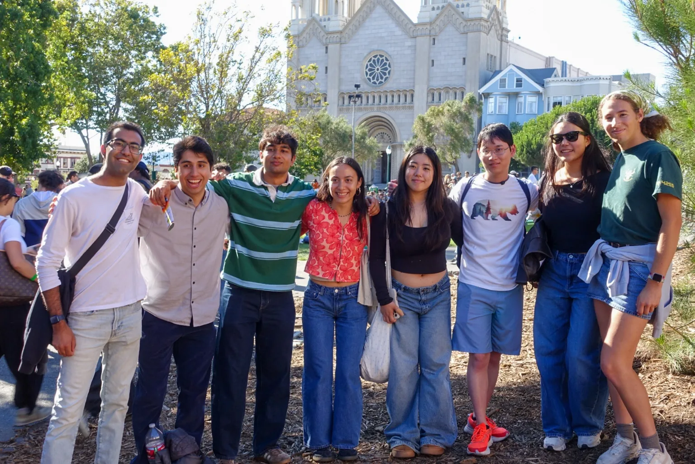
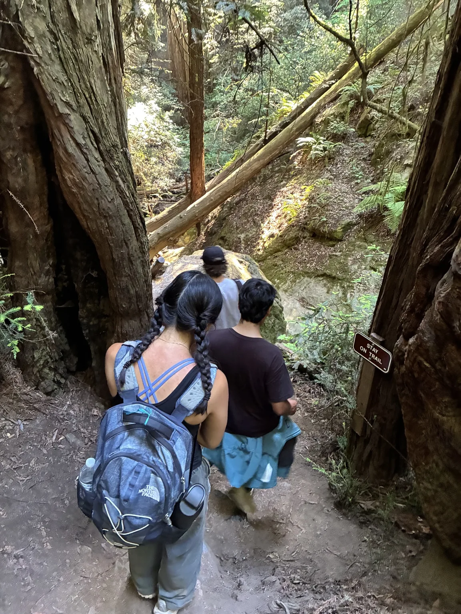
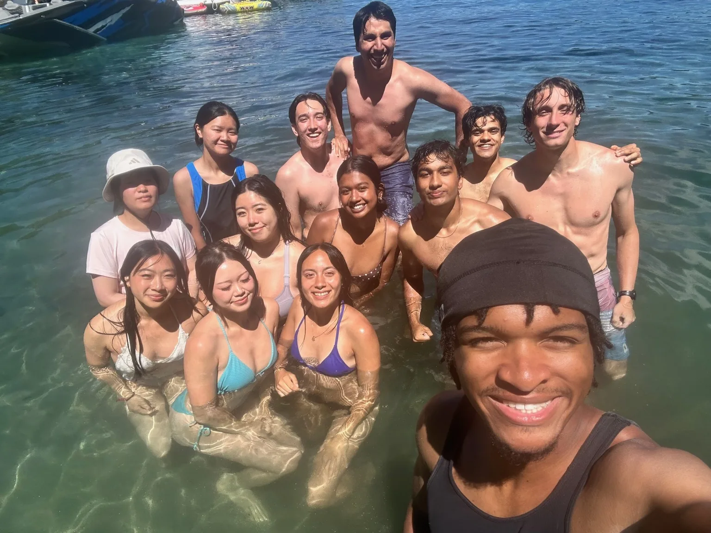
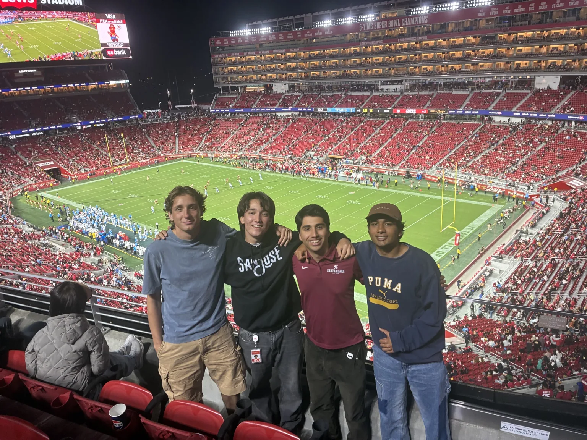

Robotics hardware internship · OTTAVA
Johnson & Johnson
CFD analysis, physical layout testing, and thermal data acquisition for surgical robotics hardware.
- Role
- Robotics Hardware Intern
- Context / status
- May–August 2026 · Mountain View, CA
- Tools & methods
- SolidWorks Flow Simulation · CFD · Thermal testing · Data acquisition · GD&T
01
Overview
A note on project details: Much of my work is confidential, so I can’t share specific designs, test data, or internal results. This page focuses on the methods I used and the skills I developed.
During summer 2026, I worked as a Robotics Hardware Intern at Johnson & Johnson MedTech on the OTTAVA surgical robotics program. My work focused on thermal engineering: using computational analysis and physical tests to understand how hardware layout influenced temperature and airflow.
The summer gave me practice moving between simulation and the test bench: setting up models, changing physical layouts, and using measured data to assess what changed.
02
My contribution
03
Design & development
Thermal analysis and testing
I used SolidWorks Flow Simulation to investigate airflow and temperature, then tested physical layouts and compared the recorded results. Working with both helped me question model assumptions and pay closer attention to test conditions.
Skills I developed
- Simulation: Interpreting flow and temperature results and relating them to hardware layout.
- Experimentation: Working through layout changes and keeping test conditions clear enough to make useful comparisons.
- Data analysis: Using data-acquisition results to compare configurations and explain their thermal behavior.
- Engineering drawings: Building my understanding of datums, allowable variation, and design intent through GD&T coursework.
OTTAVA system context
OTTAVA is Johnson & Johnson MedTech’s robotic surgical system for soft-tissue surgery. Its architecture incorporates four robotic arms into the operating table, rather than placing them on separate carts or an overhead boom. J&J describes synchronized movement of the table and arms as “twin motion,” supporting patient repositioning during a procedure.
That larger system provides the context for my internship. My individual work focused on thermal analysis and hardware testing within the program.
Public system background: Johnson & Johnson’s OTTAVA architecture overview ↗
04
Results & next steps
I left more confident using CFD alongside physical testing, interpreting thermal data, and explaining the reasoning behind a design comparison. The GD&T class also gave me a stronger foundation for reading and discussing engineering drawings.
05
Outside the office
Getting to know the other interns was one of my favorite parts of the summer. We went hiking, took a trip to Tahoe, caught football games, and found plenty of other reasons to explore together. Those friendships made Mountain View feel like home pretty quickly.



